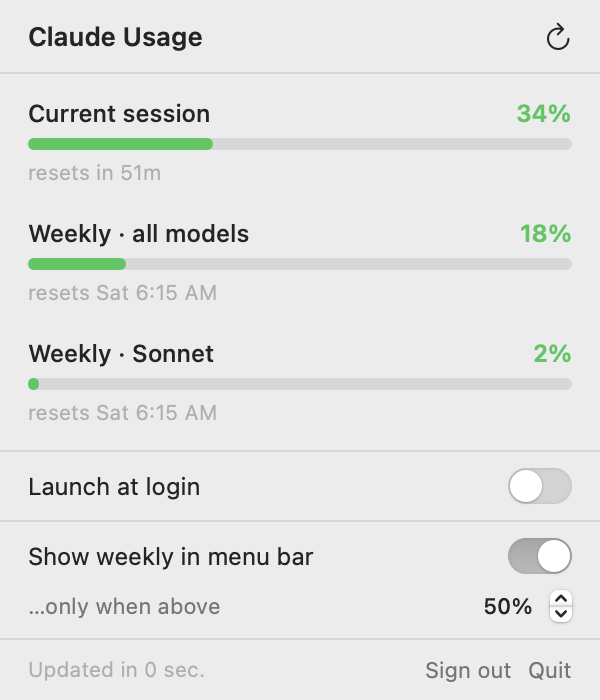
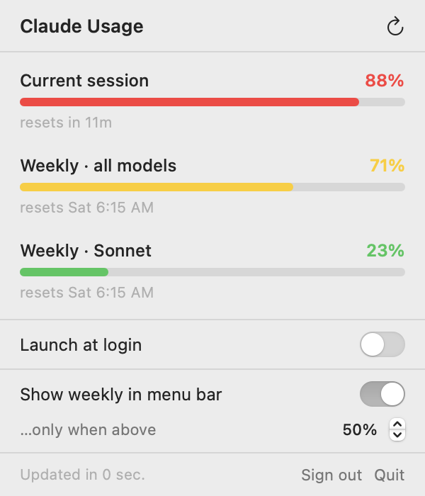
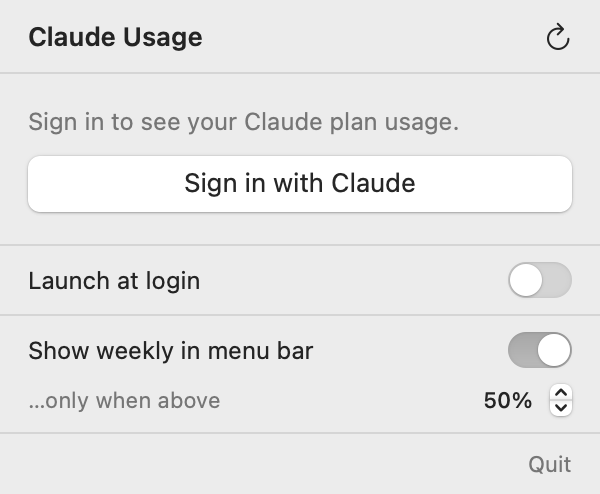

Overview
No more digging through the website or app just to check how much of your session you've used.
Claude Usage lives in your menu bar. At a glance you see your current 5‑hour session usage as a colour‑coded doughnut and how long until it resets. Click it for the full breakdown — session plus weekly limits — and a few preferences.

At a glance
The panel
Click the menu bar item for the full breakdown.
The panel shows all three limits the Claude apps report — your current session, weekly across all models, and weekly Sonnet — each with a progress bar and reset time. The refresh control (top‑right) forces an update; it also refreshes automatically every 60 seconds and whenever you open it.

Settings
A couple of preferences, right in the panel.
Launch at login
Toggle on to have Claude Usage start automatically every time you log in (via Apple's SMAppService). The toggle mirrors the real system state.
Show weekly in the menu bar
Keep the bar clean most of the time, but surface your weekly all‑models figure once it crosses a threshold you choose (default 50%, adjustable in 5% steps). Below the threshold it stays hidden; above it, you get the wk 71% readout next to your session.

Signing in
A standard, standalone sign‑in — your token never leaves your Mac.
- Click Sign in in the menu bar. Your browser opens the Claude authorization page.
- Approve the request, then copy the code Claude shows you.
- Paste it into the dialog the app pops up (⌘V works) and you're in.
Install & build
macOS 13+. Xcode Command Line Tools — no full Xcode needed.
git clone https://github.com/wfk95/claude-usage.git
cd claude-usage
./build.sh
open build/ClaudeUsage.appClick Sign in, approve in the browser, paste the code back. Done. To start it automatically, flip on Launch at login in the panel.
How it works
The app reads the same usage data the Claude apps show, from the endpoint the Claude CLI uses for its /usage command:
GET https://api.anthropic.com/api/oauth/usage
Authorization: Bearer <your token>
anthropic-beta: oauth-2025-04-20It returns the 5‑hour session bucket and the weekly buckets, which map directly to the bars in the panel. Sign‑in uses the standard OAuth 2.0 authorization‑code + PKCE flow.
MenuBarRenderer and the real UsageView to PNGs. Run ./docs/build-docs.sh to regenerate them, so the docs can never drift from the app.Project layout
build.sh Compiles Sources/ into ClaudeUsage.app
make_icon.{swift,sh} Generates the app icon
docs/build-docs.sh Renders these screenshots from real code
Sources/
AppDelegate.swift Menu bar item, popover, sign-in dialog
AppModel.swift State + polling + formatting
OAuth.swift PKCE sign-in, token exchange/refresh
UsageAPI.swift Usage endpoint + response model
UsageView.swift The click-down panel
MenuBarIcon.swift Doughnut + shared MenuBarRenderer
SettingsStore.swift Persisted preferences
Keychain.swift Token storage
LaunchAtLogin.swift Login-item toggleDisclaimer
This is an unofficial tool and is not affiliated with, endorsed by, or supported by Anthropic. It relies on a private, undocumented endpoint that may change or stop working at any time, and is intended for personal use with your own account. “Claude” is a trademark of Anthropic — this project uses the name only to describe what it does. Use at your own risk.
Released under the MIT License.